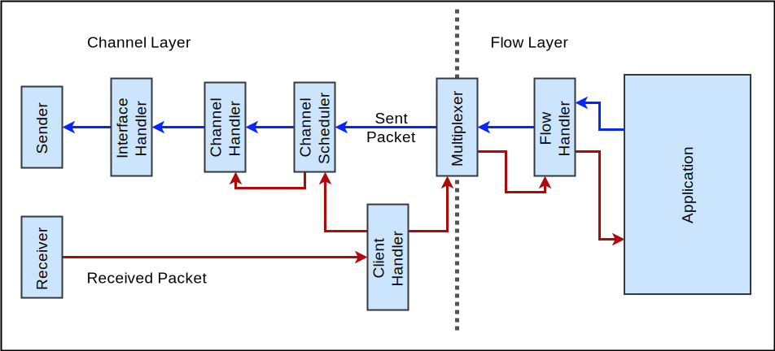

An End to End Protocol for Ubiquitous Communication over Internet of Everything
Viscous Implementation: Packet Structure and Protocol Modules
Viscous have been implemented and tested using C++ language in Linux kernel environment with pthread library.
Packet Structure
The basic packet structure for Viscous
is influenced by TCP packet structure. Each packet is divided into three parts – a) Mandatory Header, b) Variable Length Optional Headers for additional information, and c) Data Region. The maximum size of a Viscous packet is based on the Maximum Transmission Unit (MTU) for the corresponding network. At the current implementation of Viscous, we do not allow segmentation.
Viscous packet header structure
Mandatory Header
Every packet starts with 28 bytes mandatory headers. Different fields in the mandatory header are as follows.
Ver: 4 bit protocol version number. The current version is 1.
OHLen: 4 bit optional header count. We can accommodate at most 16 optional headers in a packet. As optional header size are different, it makes sense to store the number of optional headers than total size of it.
Ifc-s: 4 bit application defined source interface ID.
Ifc-d: 4 bit application defined destination interface ID. Each application can use the device and list down the interface IDs available. At the current implementation of Viscous, we assume that a device cannot have more than 15 interfaces. Interface IDs start with 1. Interface id 0 (zero) means it is not a valid interface. In our implementation, we use a pair of local and remote interface IDs as the channel identifier. So, our implementation can support at most (15 × 15) 225 channels.
Flag: Set of 1 bit flags. In our implementation, we reserve 16 bits for several 1 bit flags. Although we can use 16 different flags, currently we are using only eight flags. Following figure gives an illustration of every flag and their position in bit fields. These flags are as follows.
Flags in Viscous Packet Header
ACK: Acknowledgment flag that describes that the packet contains an acknowledgment number.
DAT: Data flag. In our implementation, a packet goes up to the flow layer only, if the packet is marked as DATA packet.
SYN: Synchronization flag used for connection establishment.
FFN: Flow finished indicator. We use it to close a single flow.
CFN: Connection/client finish flag. We use it for connection closure.
FAC: Flow acknowledgment.
PSH: Push flag. It is the indicator that a flow has just started, i.e. this is the first packet of a flow.
CSN: Channel Synchronization flag. It is being used when we try to set up a channel. It is the first packet that every channel sends to the other end. It is a two-way handshaking for channel establishment.
Sequence Number: 16 bit sequence number for a single packet. This sequence number is packet sequence number. In Viscous, we use packet based sequence number because of two reasons: a) packets are not created by the channel handler and b) As we multiplex multiple flows, it is easier to track a packet from a flow than an byte sequence from a flow. Sequence numbers are used by the channel handler to provide reliable communication between two applications. Two channels can have same sequence number for a packet.
ACK Number: 16 bit acknowledge number. In Viscous, we use cumulative acknowledgment number similar to TCP. It denotes that the receiver has received contiguous packets up to this sequence number, and it has not received the next packet until the time it was sent from the receiver.
Window Size: Receiver’s advertise window. This is used for flow control in Viscous.
Fingerprint: It is the client’s unique ID generated by the server. Every packet includes this field except the SYN packet. In Viscous, packets are discarded silently if this field is 0 (zero) or if there are no connections that matches with the fingerprint (i.e. invalid fingerprint).
Flow ID: We use a 16 bit flow ID in Viscous. To keep implementation simple, we use a 16 bit integer as the flow identifier.
Flow Sequence Number: 16 bit sequence number for each flow. It is independent of the packet sequence number. This parameter is required at the flow layer to reorder the packets at the receiver side. While the sequence number fields determine number of packets transmitted over a connection, the flow sequence number indicates the number of packets transmitted or received from a single flow. Because of the similar reason for using packet based sequence number, we also use packet based flow sequence number at the flow layer.
Original ACK Number: Viscous uses selective acknowledge mechanism. When the receiver receives an out of order packet, it is supposed to send duplicate acknowledgment packets acknowledging the last conscious packet received. The receiver puts the original sequence number of the packet which triggers the duplicate acknowledgment. This field gives sender an indication about the packets received at the receiver side. So, the sender does not resend them again. It helps Viscous in reducing number of overall retransmissions.
Padding: We use a 16 bit padding to keep the header size in the power of 2. This is currently an empty space in the header that can be reused later on.
Sender Timestamp: When a sender sends a data packet it includes a current Unix timestamp in microseconds (μs). When a receiver receives a data packets, it includes this timestamp with the ACK packet. It helps the sender in measuring the RTT more accurately.
Modules and Layers in Viscous Design
We have developed several modules to perform different purposes throughout the lifetime of the Viscous protocol. These modules support application programmability, where an application developer can independently change a module without affecting others, based on the need from the application. The block diagram given in following figure gives an elaborate description of our modular implementation of Viscous.

Internal Packet and Data Flow Diagram for Viscous
Application
An application is the users’ application using the Viscous library. Viscous exposes few application programming interfaces (APIs) like (a) start the client, (b) add new flow, (c)send data, (d) stop/finish flow, and (e) stop client. These are the methods developed under Viscous, and an application needs to access the Viscous library to call the corresponding API from Viscous Application module. Few of these APIs are provided via callbacks, such as – (a) addition of new clients, (b) reception of a new flow, (c) data received, and (d) flow closed. We use callback based APIs because it is easier to implement and it is expected that the callback methods are brief in general. This provides application programmability support with better performance guarantee in terms of execution time.
Flow Handler
In Viscous, an application directly sends data to this module and receives from it. Flow handler packetizes the raw data from the application and sends packets to the lower layer for further processing. It does not need to store any outgoing packets, as the channel layer ensures the reliability. It only keeps track of the packets that it sends, to control the flow rate. Viscous uses a sliding window based flow control mechanism based on the receiver advertised window size. The flow handler also reorders the out of order packets that it receives from the lower layer. There is a receive buffer that stores all the out of order packets. This buffer is an array of packets. The first index of this packet array point to the next expected packet sequence. Whenever the flow handler receives one or more contiguous packets from the expected sequence, it delivers the data from those flows to the application. In Viscous, there is one independent flow handler instance for each of the flows.
Multiplexer
The multiplexer is responsible for multiplexing the outgoing packets from multiple flows and forwards them to the packet scheduler. It is also responsible for demultiplexing incoming packets and forwarding them to the appropriate flow handler. In the event of an unknown flow ID in the incoming packet, it simply creates a new flow handler for the new packet. Validation of the packet is done mainly by the channel handler.
Client Handler
The client handler is the manager of Viscous protocol API. All incoming packets go through this module. For incoming packets, it checks the packet’s validity using the fingerprint. After validation, it forwards each incoming packet to the channel handler via channel scheduler for further validation and processing of the congestion control algorithm. If the channel handler returns a packet with marking as a valid packet, it forwards the packet to the multiplexer.
Channel Scheduler
It schedules the channel for the outgoing packets. The channel scheduler schedules outgoing packets to one of the channels. As mentioned earlier, we have used ACK driven channel scheduler in Viscous design. A packet is scheduled to a channel only when the channel is capable of sending new packets i.e. after receiving the acknowledgment packet.
Channel Handler
Channel handler is responsible for reliable communication and congestion control in the network. Instead of trying to build new congestion control algorithm, we have followed the standard TCP [RFC2582] congestion control algorithm for the Viscous implementation version 1.0. We mimic TCP New Reno algorithm as given in RFC2582 and other RFCs, such as [RFC2581, RFC2988, RFC2001, RFC793] with some modifications. These modifications are as follows:
Channel handler handles packets, not the byte streams. So, the sequence number represents a packet, not a byte.
Each acknowledgment packet contains the original sequence number, that is the sequence number of the packet for which this acknowledgment is triggered. It gives a similar effect as TCP SACK [RFC2018].
We have modified the fast recovery phase described in RFC2581 with SACK modification. After receiving the first partial new acknowledgment, the channel handler sends all the unacknowledged (via SACK or the original ACK in the packet header) packets for each duplicate ACK. This modification reduces retransmission due to timeout events when a burst of packets get lost in the network.
Receiver
A Viscous receiver is an independent module run as an independent thread. Its only job is to wait for a datagram on a datagram socket (i.e. UDP socket). Whenever some UDP packets arrive at a Viscous receiver, it receives the packets and forwards them to the channel handler.
Sender
It is also an independent module. Only one instance of Viscous sender can be there for each interface in an application. The Viscous sender checks a common queue with channel handlers. Whenever some channel handler decides to send a packet, it put the packet in a common queue. Then the sender picks up the packet from the queue and sends to the network via packet socket interface. It can be noted that the standard Linux datagram socket does not allow to mention the interface ID for sending a packet, which is required for multi-interface packet transmission. Therefore we use the packet socket API to encapsulate a Viscous packet inside an UDP datagram followed by a MAC frame, and then send it to the network. Using the MAC frame, we can decide the interface through which the packet can be transmitted. This supports multi-homing over Viscous implementation.